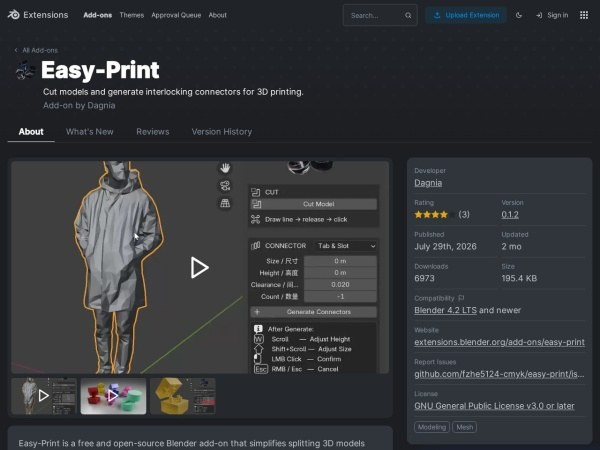
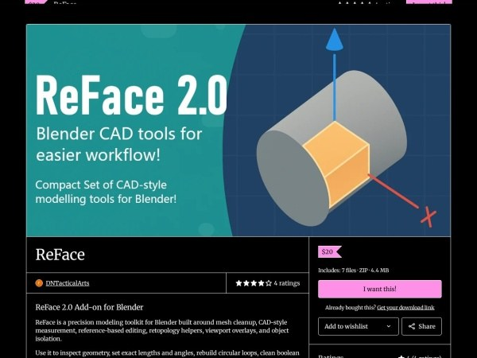
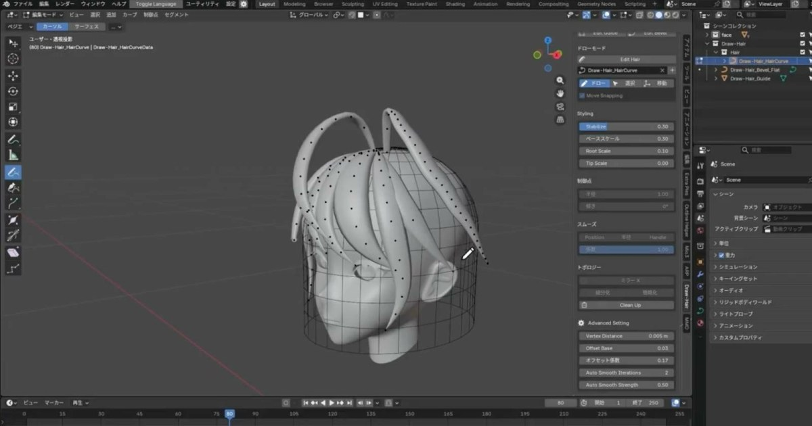
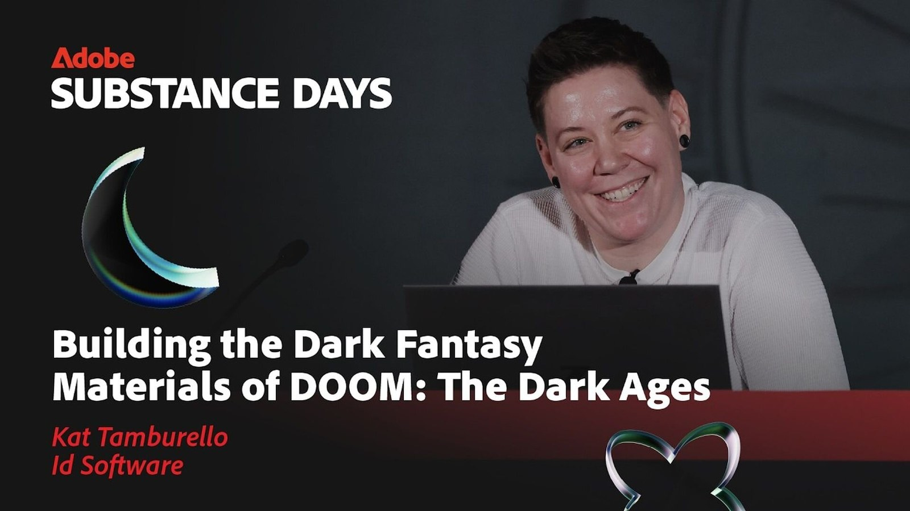
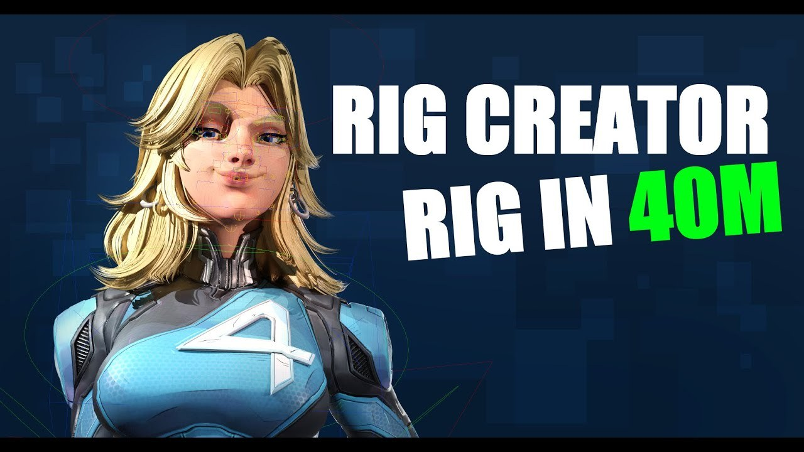
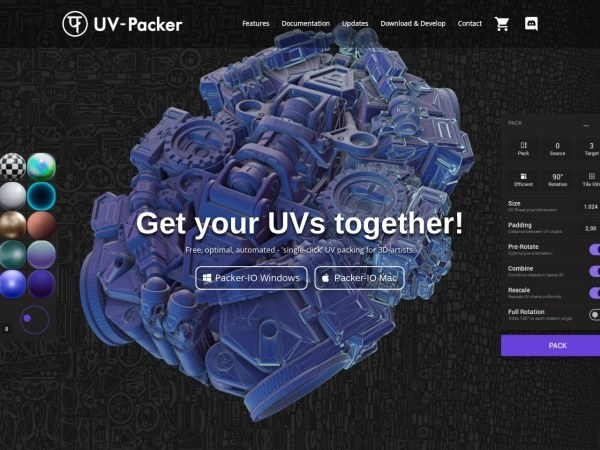
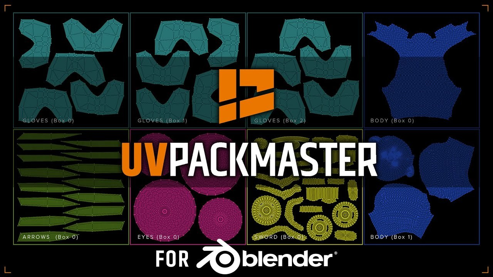
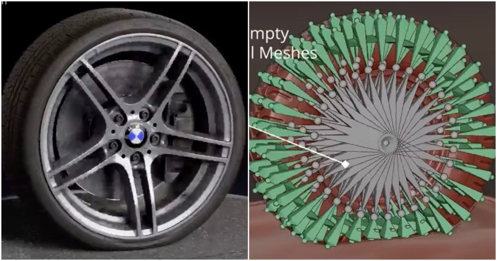
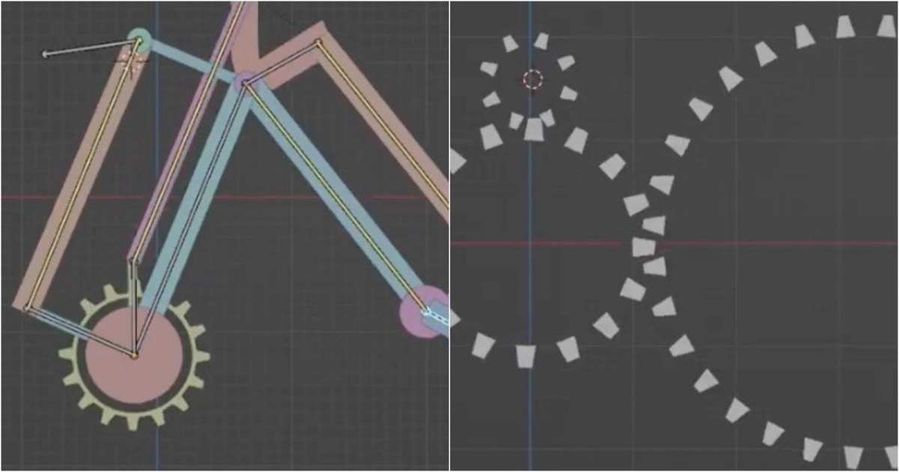
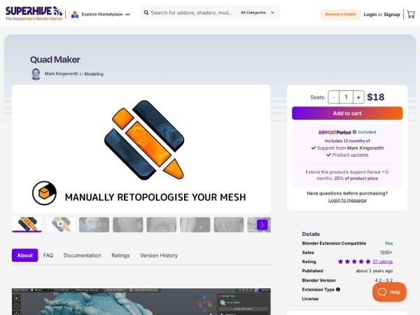

#02 · blender
Blender 地中海街景：用 Line Art、幾何刮痕與頂點色做出手繪外觀
Andrew Dimov 以 Blender 製作地中海風格街景，使用 Line Art 輪廓、手動放置的幾何細節與 EEVEE 渲染。作者表示約耗時 20 至 25 小時，主要時間花在建模和合成。
 SOURCE PREVIEW
· Local visual evidence · 點圖開啟原始來源
SOURCE PREVIEW
· Local visual evidence · 點圖開啟原始來源
Blender ★★★★☆
完整分析
技術流程：幾何與色階構成筆觸
輪廓由 Line Art 修改器產生，刮痕及細節則是手動擺放的幾何；作者以 Diffuse BSDF 配合 Color Ramp 控制陰影，再與基礎色相乘，並用頂點色變化磚牆與販賣機外觀。
製作控制：先決定明暗分區
作者在粗模階段就安排光照，讓前方建築受光、後方建築落入陰影，再調整屋頂投影角度。推論：本案的卡通層次與場景構圖一同建立，不能只靠最後替換材質重現。
方法限制：手繪外觀仍需人工配置
這個案例沒有使用 Grease Pencil 或手繪貼圖來完成所述街景，卻需要逐一放置表面細節。20 至 25 小時是作者這次作品的估計，不是套用節點後製作任意街景的時間保證。
BRIEF｜來源已驗證；證據深度較有限，完整分析會明確區分已知資訊與待驗證事項。
來源 ↗
#03 · blender
Blender 5.3：原生高斯潑濺、材質光照節點與專案層級功能
Blender 官方於 2026 年 11 月 10 日介紹 5.3，加入 PLY／SPZ 高斯潑濺匯入、幾何節點編輯與重新打光，並更新 EEVEE 材質光照控制、合成效果堆疊及動畫操作。
 SOURCE PREVIEW
· Local visual evidence · 點圖開啟原始來源
SOURCE PREVIEW
· Local visual evidence · 點圖開啟原始來源
Blender ★★★★★
完整分析
技術流程：高斯潑濺進入編輯環境
高斯潑濺可由 PLY 或 SPZ 匯入為點雲，用幾何節點編輯處理，再於 Workbench、EEVEE 或 Cycles 打光與渲染；資產庫也能以擴充套件分享，官方平台接受包含 CC0 資產的資產庫。
製作控制：材質與合成可分層調整
EEVEE 的材質光照節點可控制材質如何回應燈光；合成器新增依序傳遞輸出的節點群組效果堆疊。動畫另可複製貼上世界空間動作、轉換旋轉模式，並提供可選的專案層級系統。
導入限制：硬體與功能階段有條件
視窗 DLSS 去雜訊限定 NVIDIA GPU；Windows 的 Vulkan 預設後端不含 ARM。官方也把體積網格節點稱為自訂流體模擬的起始元件，不能將其寫成已完成所有需求的流體模擬系統。
BRIEF｜來源已驗證；證據深度較有限，完整分析會明確區分已知資訊與待驗證事項。
來源 ↗
#05 · blender
Blender 噴射引擎機構：以單根骨骼驅動噴嘴，用簡單幾何呈現推力
DemNikoArt 以 EJ200 引擎為基礎製作機械綁定，用一根骨骼控制噴嘴活動零件，間歇製作約兩至三週。首次渲染測試主要以圓錐、圓柱上的貼圖搭配鏡頭效果呈現噴射衝擊。
 SOURCE PREVIEW
· Local visual evidence · 點圖開啟原始來源
SOURCE PREVIEW
· Local visual evidence · 點圖開啟原始來源
Blender ★★★★☆
完整分析
技術流程：單一驅動的噴嘴
噴嘴的細部活動零件由一根骨骼控制，模型參考 EJ200 引擎，但作者自行設計了後部結構。這提供了複雜機械外觀搭配簡單操作入口的綁定案例。
製作影響：幾何貼圖承擔特效
噴射與推力效果主要來自圓錐和圓柱上的貼圖，配合僅數幀的動畫、鏡頭震動、動態模糊和燈光。推論：這種做法將表現重點放在短促衝擊鏡頭，而非建立完整流體模擬。
驗證限制：首輪測試的範圍
作者說明展示影格來自初始爆發、用來強調衝擊；後段引擎又是自行設計，因此不能把視覺效果視為真實引擎結構或持續推力的物理驗證。本文也沒有提供渲染效能基準。
BRIEF｜來源已驗證；證據深度較有限，完整分析會明確區分已知資訊與待驗證事項。
來源 ↗
#06 · other-dcc
Corona 16：高斯潑濺可重新打光，視差室內減少建築內部建模
Corona 16 加入 3D 高斯潑濺重新打光、裁切遮罩與 SPZ 支援，並以視差材質呈現建築室內深度；Vantage 連線也擴充材質支援及多攝影機輸出。
 SOURCE PREVIEW
· Local visual evidence · 點圖開啟原始來源
SOURCE PREVIEW
· Local visual evidence · 點圖開啟原始來源
其他 DCC ★★★★☆
完整分析
渲染技術：讓掃描表現融入燈光
場景燈光現在可照亮高斯潑濺，另有裁切遮罩與壓縮 SPZ 格式支援；3ds Max 使用者還可渲染其原生高斯潑濺。這些是原文列出的掃描內容整合改進。
製作影響：室內深度不靠完整幾何
視差室內材質可貼在外牆窗戶上，營造後方有立體空間的錯覺，無須建立真正的室內幾何；Corona Physical 材質另有視差位移選項，原文稱其記憶體需求低於傳統幾何位移。
輸出限制：低位元深度並非全面套用
Cinema 4D 版本可用 16 位元圖層儲存 CXR 以減少檔案大小，但 Cryptomatte 等需要 32 位元資料的圖層仍保留高精度；不能把這項縮檔能力理解成所有圖層一律降為 16 位元。
BRIEF｜來源已驗證；證據深度較有限，完整分析會明確區分已知資訊與待驗證事項。
來源 ↗
#07 · blender
HairMesh 免費外掛：在 Blender 頭部畫曲線，轉成四邊面髮束
riel 將 CataRackta 的獨立 HairMesh 工具移植為 Blender 外掛，支援沿頭部畫曲線、建立髮束並轉換成四邊面網格；外掛需要 Blender 5.1 或更新版本。
 SOURCE PREVIEW
· Local visual evidence · 點圖開啟原始來源
SOURCE PREVIEW
· Local visual evidence · 點圖開啟原始來源
Blender ★★★★☆
完整分析
工具流程：曲線連成髮束
使用者可以逐點或徒手畫曲線，再由牆面系統連接鄰近曲線形成髮束；切換 Live 與 Baked 視圖，可分別處理曲線與牆面，或預覽轉換後的幾何。
製作控制：形狀與排列工具
外掛提供對稱、複製、引導線及接合等工具，並含厚度、扭轉、雜訊、捲曲與密度等修改功能。推論：這組控制適合在髮束形狀調整時保留曲線編輯步驟，再檢查網格結果。
導入限制：版本與分支方向
報導明確要求 Blender 5.1 以上，並指出後續開發將以 Blender 專屬改進為主；因此不能假設它會與原本的獨立工具保持完全相同的功能進度，既有 .hairmesh 資料則有匯入支援。
BRIEF｜來源已驗證；證據深度較有限，完整分析會明確區分已知資訊與待驗證事項。
來源 ↗
#09 · blender
歷史參考｜Blender 5.1：著色器光線投射與非破壞曲線平滑
2026 年 3 月的 Blender 5.1 報導介紹著色器 Raycast 節點、動畫播放改善及 Gaussian 曲線平滑；這是舊版本功能回顧，其中 EEVEE 的光線投射仍限於螢幕空間。
 SOURCE PREVIEW
· Local visual evidence · 點圖開啟原始來源
SOURCE PREVIEW
· Local visual evidence · 點圖開啟原始來源
Blender ★★★☆☆
完整分析
技術變更：著色器中的光線投射
Raycast 節點將對場景幾何投射光線的能力帶入 Cycles 與 EEVEE 著色器，原文以非寫實渲染效果說明其用途；它不是僅存在於幾何節點中的操作。
動畫製作：曲線調整保留可逆性
更新改善高面數網格的形狀鍵求值與大量關鍵骨骼的動作播放；新增 Gaussian 平滑修改器可降低曲線雜訊與細節，與直接平滑操作相比，採用非破壞方式。
版本限制：兩個渲染器並非等效
報導明確指出 EEVEE 的 Raycast 當時只做螢幕空間追蹤；將該節點用在非寫實材質時，不能把 Cycles 與 EEVEE 視為完全相同的實作。此處記錄的是 5.1 發布時的能力。
BRIEF｜來源已驗證；證據深度較有限，完整分析會明確區分已知資訊與待驗證事項。
來源 ↗
#12 · blender
Blender 摺疊傘教學：串接建模、骨架綁定與布料控制
PIXXO 3D 的初學者教學以 Blender 5.2 LTS 製作可完全收合的雨傘，逐步涵蓋建模、綁定和布料設定；文章也指出布料附著與動畫方法可延伸到披風和旗幟。
 SOURCE PREVIEW
· Local visual evidence · 點圖開啟原始來源
SOURCE PREVIEW
· Local visual evidence · 點圖開啟原始來源
Blender ★★★☆☆
完整分析
技術流程：由傘架到布料設定
教學把建模、骨架綁定與布料設定放進同一個可摺疊雨傘專案，目標是完成可收合的道具；這比只展示傘面外觀多了機構與布料協作的學習主題。
製作應用：附著物與柔性表面
原文舉出超級英雄披風及固定在旗桿上的旗幟，說明內容也涉及如何附著、控制和動畫化布料。這些是文中列出的延伸用途，不代表已提供各用途的完整專案。
導入限制：限定已知教學環境
文章明確說明使用 Blender 5.2 LTS，但沒有列出布料參數、傘骨約束或碰撞設定；目前可確認的是教學範圍與版本，實作細節仍要依原教學，不宜自行補成既定解法。
BRIEF｜來源已驗證；證據深度較有限，完整分析會明確區分已知資訊與待驗證事項。
來源 ↗
#15 · substance
Spirit Vessel 道具拆解：用磨損成因安排貼圖，量化毛髮卡片成本
Abdelhamid Ahmed 以 Substance 3D Painter 製作葫蘆道具 Spirit Vessel，將腐敗、潮濕與摩擦納入貼圖設計；案例也比較加入毛髮卡片前後的面數，呈現寫實細節與遊戲資產預算的取捨。
 SOURCE PREVIEW
· Local visual evidence · 點圖開啟原始來源
SOURCE PREVIEW
· Local visual evidence · 點圖開啟原始來源
Substance ★★★☆☆
完整分析
貼圖流程：劣化有具體成因
解析將木材真菌腐敗、毛髮滯留濕氣、珠子摩擦和乾燥不足造成的黴變，轉成材質劣化的依據；作者強調基礎色中的微小色差與污漬，不能只靠粗糙度追求寫實。
製作成本：毛髮卡片增加面數
基礎模型不含毛髮卡片時為 48,500 個三角面，加入卡片後增加至 91,000。這是此資產的具體取捨，能用來理解外觀細節如何改變幾何預算，而不是通用的遊戲面數標準。
驗證限制：檔案拆解不等於效能實測
販售資料含 Painter 專案、不同精度的 FBX 模型及貼圖，可檢查錨點、圖層混合與生成器設定；但正文沒有提供目標平台幀率，不能僅憑面數或「遊戲可用」定位推定實際執行效能。
BRIEF｜來源已驗證；證據深度較有限，完整分析會明確區分已知資訊與待驗證事項。
來源 ↗
#16 · blender
Easy-Print：在 Blender 畫切割線，同時生成列印組裝接頭
Easy-Print 可沿線分割 Blender 模型，並生成矩形榫槽、圓柱插銷或燕尾滑軌接頭；免費版本具備核心切分功能，另有切割線與接頭選項較多的付費 V2。

SOURCE PREVIEW
· Local visual evidence · 點圖開啟原始來源
Blender ★★★☆☆
完整分析
工具流程：切面連同接頭生成
使用者在模型上畫線指定分割位置，工具將模型切成兩件，並在切面生成公母接頭；可選矩形榫槽、圓柱銷孔或滑入式燕尾結構，並依切面大小自動調整。
製作控制：配合列印公差調尺寸
外掛提供 FDM 與 SLA 列印的間隙設定，生成後可用滑鼠滾輪調整接頭深度，配合 Shift 改變尺寸。推論：這讓切分與組裝間隙能在同一流程調整，但不等於已替各種材料完成校正。
版本限制：免費核心與完整版本不同
文章指出第一版原本是測試核心功能的基本示範；V2 才提供更靈活的切割線、更多接頭及磁鐵孔選項。免費版與付費 V2 的功能不可混寫，也不能把 V2 的全部能力歸給免費下載。
BRIEF｜來源已驗證；證據深度較有限，完整分析會明確區分已知資訊與待驗證事項。
來源 ↗
#17 · blender
ReFace 2.0：整合精密編輯、網格修補與四角邊界重拓樸
ReFace 2.0 將 Blender 的量測、網格清理與重拓樸工具整合在一起；文章另介紹 2.0.5 的繪製區塊模式，可在目標表面放置四個角，直接定義要重建的區域。

SOURCE PREVIEW
· Local visual evidence · 點圖開啟原始來源
Blender ★★★☆☆
完整分析
技術流程：量測與硬表面修補
工具可即時顯示邊長、角度、半徑、面積和法線，並透過拖曳把手調整尺寸；另外提供布林後清理、圓環重建與圓環對齊等功能，集中處理精密模型的常見修改。
製作控制：直接界定重拓樸區塊
2.0.5 更新的 Drawn Patch Mode 不必先選既有面，而是在目標網格上放置四個角來建立區塊邊界。推論：面對掃描或生成模型時，可先指定局部重建範圍，逐區整理可編輯拓樸。
方法限制：仍有人工定義的步驟
四角邊界模式明確需要使用者放置角點，與一鍵完成整個角色的自動重拓樸不同；本文描述的是區域修補與工具整合，沒有證據顯示能自動產出符合動畫變形需求的全身邊流。
BRIEF｜來源已驗證；證據深度較有限，完整分析會明確區分已知資訊與待驗證事項。
來源 ↗
#18 · blender
Draw-Hair：沿引導網格在 Blender 視窗繪製髮絲曲線
Draw-Hair 是持續開發中的 Blender 外掛，可在視窗畫出自動貼附引導網格的髮絲曲線；先指定並調整引導面，再進入繪製模式，還能修改曲線截面與拓樸設定。

SOURCE PREVIEW
· Local visual evidence · 點圖開啟原始來源
Blender ★★★☆☆
完整分析
工具流程：先設引導再畫髮絲
使用時先按 Set Guide，調整引導網格貼合頭部及曲線截面，再按 Edit Hair 進入繪製模式；畫出的曲線會自動貼附引導面，避免完全憑空放置線條。
製作控制：曲線解析度可調
Topology 設定可控制曲線解析度與簡化頂點。推論：頭髮輪廓繪好後，仍有整理曲線取樣密度的空間；本文沒有把這項功能延伸解讀成自動生成角色骨架或毛髮物理。
成熟度限制：仍在持續開發
外掛源於大學課程專案，作者仍在改善使用便利性並徵求回饋。原文允許個人與商業專案使用，但沒有提供支援版本清單或大型髮型的效能測試，不能據此保證所有製作環境適用。
BRIEF｜來源已驗證；證據深度較有限，完整分析會明確區分已知資訊與待驗證事項。
來源 ↗
#19 · substance
《DOOM: The Dark Ages》材質解析：模組化損傷與共用圖層遮罩
id Software 的講座介紹如何用 Substance 3D Designer 建立模組化損傷濾鏡，並以巨觀法線和 RGBA 遮罩組合材質，減少大型場景為每件資產製作獨立貼圖的負擔。

SOURCE PREVIEW
· Local visual evidence · 點圖開啟原始來源
Substance ★★★☆☆
完整分析
技術流程：損傷材質做成濾鏡
Damage Reveal 依虛擬標記的包圍範圍，以高度圖混合損傷材質；為避免所有平鋪材質都各做一份損壞版，團隊將石材裂痕、木材碎裂等特性模組化成 Designer 濾鏡。
製作成本：以遮罩重用材質
複合材質採用烘焙巨觀法線與 RGBA 圖層混合遮罩；各通道分別管理基礎質感、色彩變化、凹處污漬與凸處磨損，搭配自動紋素密度處理大型資產的縮放。
方法限制：巨大場景仍會暴露重複
文章指出機甲與騎龍視角會放大平鋪重複問題，因此另以 Hotspot Vista 結合飾條貼圖和圖集思路，為中模雕刻可平鋪細節再套複合材質；共用遮罩本身不能直接消除所有重複感。
BRIEF｜來源已驗證；證據深度較有限，完整分析會明確區分已知資訊與待驗證事項。
來源 ↗
#20 · blender
歷史參考｜Rig Creator：人體與臉部綁定、骨骼關係管理工具
2025 年的 Rig Creator 介紹展示了免費 Blender 綁定外掛，包含臉部綁定、更新的骨骼生成器與關係管理工具；示範影片長約 40 分鐘，介紹由零開始設定角色的流程。

SOURCE PREVIEW
· Local visual evidence · 點圖開啟原始來源
Blender ★★☆☆☆
完整分析
角色技術：重寫綁定與表情支援
文中列出的更新包括重寫綁定系統、加入臉部綁定、調整約束面板以及更新骨骼生成器；它們分別對應角色控制、表情動畫和骨架建立的工作。
製作控制：骨骼關係與命名
新增的關係工具用來管理骨骼連結，文件增加英文版，骨骼名稱和基礎集合也改為英文。推論：這些變化讓設定檢查與閱讀教學時更容易對照同一套名稱。
驗證限制：片長不代表所有角色工時
40 分鐘是介紹從零綁定角色的影片長度，不能當成任何角色都能於相同時間完成的保證；文章沒有提供不同體型的蒙皮品質比較，本稿不據此宣稱自動綁定可免除變形檢查。
BRIEF｜來源已驗證；證據深度較有限，完整分析會明確區分已知資訊與待驗證事項。
來源 ↗
#21 · blender
歷史參考｜UV-Packer 1.01：鎖定 UV 島位置，再填補排列空隙
2021 年介紹的 UV-Packer 1.01 更新加入 UV 島鎖定、改善孔洞偵測與多圖塊排列效能；原文說明該版更新於 9 月 30 日發布，並要求搭配外部程式使用。

SOURCE PREVIEW
· Local visual evidence · 點圖開啟原始來源
Blender ★★☆☆☆
完整分析
貼圖流程：固定既有島再排列
使用者可固定 UV 頂點或面，使對應 UV 島在排列時保持位置；工具也改善先前被忽略的孔洞偵測，讓剩餘空間能納入排版考量。
製作影響：保留配置與補空隙
鎖定既有 UV 島後，排列過程不會移動它們；推論：需要維持已決定的 UV 區域時，可把固定區與仍能重排的部分分開管理，搭配該版多圖塊效能改善處理其餘配置。
安裝限制：當時需要 Windows 外部程式
文章明確提醒除外掛外，還要把外部執行檔手動放進外掛展開位置，而且當時外部程式僅支援 Windows。這是 2021 年版本的安裝條件，不是對今日平台支援的查核結論。
BRIEF｜來源已驗證；證據深度較有限，完整分析會明確區分已知資訊與待驗證事項。
來源 ↗
#22 · blender
歷史參考｜UVPackmaster 3：命名群組、鎖定相對位置與 UDIM 排列
2022 年的 UVPackmaster 3 介紹包含命名 UV 群組、排列優先權、群組鎖定和可腳本化架構，並擴充 UDIM 工作流程；本文回顧當時功能，不將舊價格或限時優惠當成現況。

SOURCE PREVIEW
· Local visual evidence · 點圖開啟原始來源
Blender ★★☆☆☆
完整分析
貼圖技術：分組與位置約束
UV 島可劃入命名群組，對低優先權的 UV 島設定縮放限制；鎖定群組則會保留島與島之間的相對位置，還能在既有排列中加入新島，並指定 UV 區域內的方框作為目標。
製作控制：多圖塊與腳本整合
Groups To Tiles 模式擴充 UDIM 配置彈性，手動分組以名稱取代編號；內建 Python 與可腳本化架構允許調整操作邏輯。推論：這可把材質群組的配置規則納入較一致的整理流程。
相容性限制：歷史支援清單有邊界
本文當時列出的環境是 Windows 10／11 的 64 位元版本，以及 Blender 2.8x、2.9x 和 3.x，Linux 與 macOS 仍列為後續計畫；不能把這份舊清單當成今日相容性或效能保證。
BRIEF｜來源已驗證；證據深度較有限，完整分析會明確區分已知資訊與待驗證事項。
來源 ↗
#23 · blender
歷史參考｜Blender 輪胎自動綁定：以變形網格與地面建立受壓效果
2026 年 4 月報導介紹 Raffael Kloten 的 Tire Rig Generator，可輸入輪胎、低面數變形網格與地面網格，自動建立綁定及蒙皮；文中影片展示了三個輪胎測試案例。

SOURCE PREVIEW
· Local visual evidence · 點圖開啟原始來源
Blender ★★☆☆☆
完整分析
工具流程：以三種網格建立綁定
外掛利用 Blender Python API 自動建立輪胎綁定並蒙皮，使用者要提供輪胎本體、低面數變形網格及地面網格，讓系統據此生成對應的控制結構。
製作影響：輪胎接地的形變
工具針對壓力及表面變形，報導把受載時的輪胎形變連到車輛真實感；推論：它的製作用途在於補足接地壓縮，而不是只讓輪胎沿車軸旋轉。
驗證限制：三個範例不能涵蓋所有輪胎
文章雖轉述可處理幾乎任何輪胎的說法，實際提到的展示只有三個測試輪胎，操作細節另放在下載文件中；本稿不把宣稱擴大成已驗證全部胎型，也不推定物理精確度。
BRIEF｜來源已驗證；證據深度較有限，完整分析會明確區分已知資訊與待驗證事項。
來源 ↗
#24 · blender
歷史參考｜Blender 機械綁定課程：從 IK、齒輪到單控制器夾爪
2025 年 10 月報導介紹 DemNikoArt 的七部分 Blender 機械綁定課程，內容從 IK 入門延伸到機械腿、活塞、齒輪、機械手臂、纜線與夾爪；此處保留當時的課綱範圍。

SOURCE PREVIEW
· Local visual evidence · 點圖開啟原始來源
Blender ★★☆☆☆
完整分析
技術流程：循序拆解機械元件
課程先介紹 IK，再處理機械腿與活塞；齒輪段落涵蓋簡單齒輪如何配合並引入驅動器，機械手臂段落則說明多組 IK 綁定如何共同運作。
製作控制：纜線與夾爪
纜線章節以不需要模擬或烘焙的方式處理機構，夾爪章節展示由單一控制器操作的複雜外觀。推論：課綱的共同方向是把機械活動整理成動畫師可操作的控制入口。
版本限制：歷史課綱不是現況保證
這份 2025 年介紹列出七部分內容，卻沒有提供 Blender 相容版本或完整約束配置；不能用這篇舊課綱保證現行課程章數、下載內容或跨版本運作情況。
BRIEF｜來源已驗證；證據深度較有限，完整分析會明確區分已知資訊與待驗證事項。
來源 ↗
#25 · blender
歷史參考｜Quad Maker 1.0：以畫四邊面帶與邊界延伸輔助重拓樸
2024 年推出的 Quad Maker 1.0 面向 Blender 4.2，將加點、補四邊面、邊界延伸和曲面四邊面帶等操作整合成快捷鍵工具；設計重點是手動重拓樸的簡潔流程。

SOURCE PREVIEW
· Local visual evidence · 點圖開啟原始來源
Blender ★★☆☆☆
完整分析
工具流程：逐步建立四邊面
工具可以快速加點、以四邊面填補周圍幾何，並將邊界以單邊、迴圈或邊環方式擠出；也能在目標表面畫四邊面帶，搭配快速環切與頂點平滑整理形狀。
製作控制：整合既有網格編輯
Quad Maker 受 Maya Quad Draw 啟發，將主要重拓樸操作放入統一快捷鍵工作區，同時維持與 Blender 原生網格編輯的整合。推論：它偏向減少操作切換，並非替使用者決定全部拓樸。
效能限制：高面數來源與直接編輯不同
原文區分以高面數物件為參考做重拓樸，以及直接編輯高面數網格：後者並非強項，物件很多的場景也可能變慢。這些是 1.0 時期的限制，不應忽略後便宣稱任何場景都能加速。
BRIEF｜來源已驗證；證據深度較有限，完整分析會明確區分已知資訊與待驗證事項。
來源 ↗